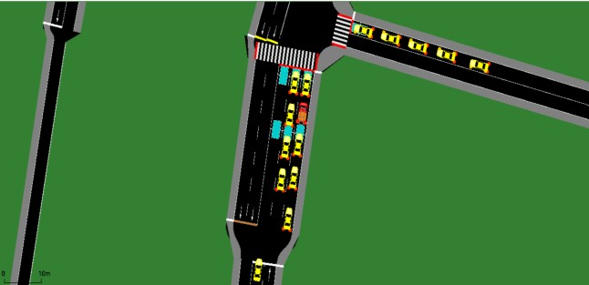

Project Details
Assist Emergency Vehicles on Intersection Using Reinforcement Learning
Emergency vehicles, like fire trucks and ambulances, play a critical role in responding to crises, where every second counts. In a real-world scenario, navigating through intersections poses a significant challenge, as emergency vehicle drivers must maneuver cautiously and alertly, which can delay their response time.
This project explores innovative traffic control solutions that prioritize emergency vehicles through the power of machine learning, specifically reinforcement learning. By leveraging SUMO (Simulation of Urban Mobility) and microscopic traffic simulation, this project aims to create an environment where emergency vehicles can move quickly and safely, with minimal impact on other road users.
Key Challenges Addressed:
- Ensuring emergency vehicle prioritization at intersections
- Minimizing risks of sudden reactions by other road users
- Reducing traffic delays for both emergency and regular vehicles
Solution Overview:
An AI-based signal controller dynamically adjusts traffic signals to give priority to emergency vehicles. Through Vehicle-to-Infrastructure (V2I) communication and reinforcement learning, the controller optimizes real-time traffic flow.
- Developed a custom AI environment for training
- Implemented observation, action, and reward functions for precise control
- Improved emergency vehicle travel time by 50-60%
Technology & Methodology:
Using SUMO and V2I communication, the project explores several reinforcement learning algorithms to prioritize emergency vehicles at intersections. This innovative approach leverages AI to ensure smoother, faster passage for emergency vehicles.
Impact and Future Potential:
This AI-driven solution has the potential to revolutionize urban traffic management by providing critical support for emergency response teams. Future applications could expand to cover more comprehensive smart city solutions, enhancing safety and efficiency across urban environments.